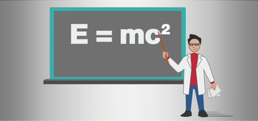

物理特性

Stride は、重力や衝突といった現実世界の物理特性をシミュレートします。このセクションでは、物理特性コンポーネントの動作方法、プロジェクトへの追加方法、スクリプトでの使用方法を説明します。
このセクションの内容
- コライダー: コライダー コンポーネントをエンティティに追加することで、物理特性を作成します
- レイキャスティング: 交差するオブジェクトをトレースします
- シミュレーション: Stride が物理特性を制御する方法です
チュートリアル
- 跳ね返るボールを作成する: 静的コライダー コンポーネントと剛体コンポーネントを使用して、床で跳ね返るボールを作成します
- トリガーをスクリプトにする: ボールが通過するときにボールのサイズを 2 倍にするトリガーを作成します
その他の参照情報
Stride では、オープンソースの Bullet Physics エンジンが使用されています。詳細については、Bullet のユーザー マニュアルを参照してください。